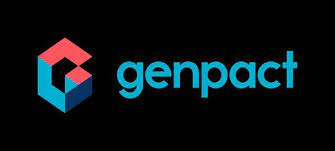

Experience
NTT DATA — Salesforce Developer / Team Lead
Nov 2023 – Present
- Led a team of Salesforce developers in designing and implementing scalable solutions for contract management and partner collaboration.
- Directed end-to-end integration with DocuSign via REST APIs, automating contract execution and ensuring compliance for Third-Party Channel Contracts.
- Architected and delivered a Partner Portal using LWR sites and reusable LWC components, offering responsive UI, role-based access, and metadata-driven configurations.
- Guided team members on adopting best practices in Apex, LWC, and Flows while maintaining high-quality standards through peer reviews and CI/CD processes.
- Designed custom approval and workflow automation using Flows and Apex, reducing manual intervention and improving contract turnaround time.
- Collaborated with business stakeholders to translate functional requirements into scalable Salesforce solutions with measurable efficiency gains.

Publicis Sapient — Salesforce Developer
Mar 2022 – Nov 2023
- Built Lightning Apps, Actions, and Flows integrated with Apex logic for enhanced UI interactivity and automation
- Implemented modular Roll Entry functionality using LWC + Apex, adhering to SOLID and design pattern principles.
- Developed asynchronous and batch Apex solutions to process large datasets efficiently.
- Participated in Agile sprints, contributing to design discussions and sprint planning for major feature rollouts

Genpact — Salesforce Developer
2019 – 2022
- Developed and maintained Apex classes, triggers, test classes, and LWC components for enterprise-grade CRM applications.
- Automated accounts receivable workflows, significantly improving dispute resolution timelines.
- Supported a PLM tool project, optimizing case management and tracking efficiency.
- Integrated Salesforce with external systems using Jitterbit for secure, bidirectional data synchronization.